Entrenamiento y modelado#
Librerías#
import os
import warnings
import numpy as np
import pandas as pd
import seaborn as sns
import matplotlib.pyplot as plt
import matplotlib.dates as mdates
# Machine Learning
from sklearn.neural_network import MLPRegressor
from sklearn.preprocessing import StandardScaler, RobustScaler
from sklearn.metrics import mean_squared_error, mean_absolute_error
import joblib
# Time series y estadísticas
from tsxv.splitTrainValTest import split_train_val_test_groupKFold
from statsmodels.tsa.stattools import bds
from statsmodels.stats.diagnostic import acorr_ljungbox
import warnings
warnings.filterwarnings("ignore", category=UserWarning)
Carga de datos#
data = pd.read_csv('../data/btc_final.csv')
data['Date'] = pd.to_datetime(data['Date'])
data = data.set_index('Date')
Modelado#
def modelado_volatilidad_univariado(data, lags_list, volatilidad_target=7, n_steps_forecast=7, n_steps_jump=1):
"""
Entrena modelos MLP univariados (Volatilidad -> Volatilidad) y guarda el mejor fold de cada lag como artefacto MLOps.
"""
all_results_list = []
dictresultados = {}
modelos_por_lag = {}
escaladores_por_lag = {}
print(f"\n{'='*60}")
print(f"ENTRENANDO MODELOS UNIVARIADOS - VOLATILIDAD {volatilidad_target} DÍAS")
print(f"{'='*60}")
for n_steps_input in lags_list:
print(f"\n--- Procesando Lag {n_steps_input} días ---")
time_series_univariada = data[f'Volatilidad_{volatilidad_target}d'].dropna()
X, y, Xcv, ycv, Xtest, ytest = split_train_val_test_groupKFold(
time_series_univariada,
n_steps_input,
n_steps_forecast,
n_steps_jump
)
preds_train_folds, preds_val_folds, preds_test_folds = [], [], []
real_train_folds, real_val_folds, real_test_folds = [], [], []
bds_pvalues_folds = []
modelos_folds = []
escaladores_folds = []
for fold in range(len(X)):
print(f" Fold {fold+1}/{len(X)}")
scaler_x = RobustScaler().fit(X[fold])
y_train_log = np.log1p(y[fold])
scaler_y = StandardScaler().fit(y_train_log)
X_train_scaled = scaler_x.transform(X[fold])
X_val_scaled = scaler_x.transform(Xcv[fold])
X_test_scaled = scaler_x.transform(Xtest[fold])
y_train_scaled = scaler_y.transform(y_train_log)
model = MLPRegressor(
hidden_layer_sizes=(128, 64),
activation="relu",
solver="adam",
alpha=1e-3,
early_stopping=False,
max_iter=2000,
random_state=fold,
learning_rate_init=5e-4
)
model.fit(X_train_scaled, y_train_scaled)
modelos_folds.append(model)
escaladores_folds.append((scaler_x, scaler_y))
# Predicciones en log-space → inversa → expm1
preds_test_log = model.predict(X_test_scaled)
preds_test_des_log = scaler_y.inverse_transform(preds_test_log)
preds_test_des = np.expm1(preds_test_des_log)
y_test_des = ytest[fold]
residuos_h1 = y_test_des[:, 0] - preds_test_des[:, 0]
try:
_, bds_pvalue = bds(residuos_h1, max_dim=2)
bds_pvalue = bds_pvalue if not np.isnan(bds_pvalue) else np.nan
except Exception:
bds_pvalue = np.nan
bds_pvalues_folds.append(bds_pvalue)
for h in range(n_steps_forecast):
y_true = y_test_des[:, h]
y_pred = preds_test_des[:, h]
epsilon = 1e-8
mape_val = np.mean(np.abs((y_true - y_pred) / (y_true + epsilon))) * 100
mae_val = mean_absolute_error(y_true, y_pred)
mse_val = mean_squared_error(y_true, y_pred)
rmse_val = np.sqrt(mse_val)
weight = 1.0 if h == 0 else 0.5
weighted_rmse = rmse_val * weight
all_results_list.append({
"n_steps_input": n_steps_input, "fold": fold + 1,
"horizon": h + 1, "MAPE": mape_val, "MAE": mae_val,
"RMSE": rmse_val, "MSE": mse_val,
"weighted_rmse": weighted_rmse,
"BDS_pvalue": bds_pvalue if h == 0 else np.nan
})
# Guardar preds/reales
preds_train_log = model.predict(X_train_scaled)
preds_val_log = model.predict(X_val_scaled)
preds_train_folds.append(np.expm1(scaler_y.inverse_transform(preds_train_log)))
preds_val_folds.append(np.expm1(scaler_y.inverse_transform(preds_val_log)))
preds_test_folds.append(preds_test_des)
real_train_folds.append(y[fold])
real_val_folds.append(ycv[fold])
real_test_folds.append(y_test_des)
dictresultados[n_steps_input] = {
"reals": {"train": real_train_folds, "val": real_val_folds, "test": real_test_folds},
"preds": {"train": preds_train_folds, "val": preds_val_folds, "test": preds_test_folds},
"original_df": data,
"bds_pvalues": bds_pvalues_folds
}
modelos_por_lag[n_steps_input] = modelos_folds
escaladores_por_lag[n_steps_input] = escaladores_folds
lag_df = pd.DataFrame([r for r in all_results_list if r["n_steps_input"] == n_steps_input])
fold_metrics = lag_df.groupby('fold').agg({
'weighted_rmse': 'mean',
'RMSE': 'mean',
'MAPE': 'mean',
'MAE': 'mean',
'MSE': 'mean',
'BDS_pvalue': 'first'
}).reset_index()
best_fold = int(fold_metrics.loc[fold_metrics['weighted_rmse'].idxmin(), 'fold']) - 1
best_row = fold_metrics.loc[fold_metrics['weighted_rmse'].idxmin()]
print(f" Mejor fold para lag {n_steps_input}: Fold {best_fold+1} | RMSE: {best_row['RMSE']:.4f}")
model = modelos_folds[best_fold]
scaler_x, scaler_y = escaladores_folds[best_fold]
assert scaler_x.n_features_in_ == n_steps_input, "❌ El lag no coincide con el escalador"
model_info = {
"lag": n_steps_input,
"fold": best_fold + 1,
"RMSE": best_row['RMSE'],
"MAPE": best_row['MAPE'],
"MAE": best_row['MAE'],
"MSE": best_row['MSE'],
"BDS_pvalue": best_row['BDS_pvalue'],
"reals": dictresultados[n_steps_input]["reals"]["test"][best_fold],
"preds": dictresultados[n_steps_input]["preds"]["test"][best_fold]
}
artifacts = {
"model": model,
"scaler_x": scaler_x,
"scaler_y": scaler_y,
"info": model_info
}
joblib.dump(artifacts, f"../app/model_lag{n_steps_input}.joblib")
results_df = pd.DataFrame(all_results_list)
print(f"\n✓ Proceso de modelado finalizado. Se guardaron {len(lags_list)} modelos.")
return {
'results_all': dictresultados,
'results_df': results_df
}
Flujo del Proceso#
1. Experimentación con Ventanas Temporales (Lags)#
Se prueban múltiples ventanas (
lags_list = [7, 14, 21, 28]).Cada modelo aprende con distinta “memoria” de datos históricos para encontrar el lag óptimo.
2. Validación Cruzada con Series Temporales#
Se utiliza GroupKFold mediante
split_train_val_test_groupKFold.Beneficios:
Evita data leakage (simula entorno real de predicción).
Mayor robustez: múltiples folds → métricas más fiables.
3. Preprocesamiento y Escalado por Fold#
X (features):
RobustScaler, menos sensible a outliers financieros.y (target):
np.log1p(y): estabiliza varianza y reduce asimetría.StandardScaler: normaliza tras la transformación.
Escaladores ajustados únicamente con datos de entrenamiento (sin fuga de información).
4. Entrenamiento del MLP#
Arquitectura:
MLPRegressor(hidden_layer_sizes=(128, 64), activation="relu")Parámetros clave:
alpha=1e-3: regularización L2 (previene sobreajuste).random_state=fold: reproducibilidad.learning_rate_init: controla la convergencia.
5. Evaluación y Selección#
Predicción y desescalado: uso de
inverse_transform+np.expm1.Métricas calculadas:
MAPE,MAE,RMSE,MSEpara horizontes de 1 a 7 días.Selección del mejor fold:
Basado en
weighted_rmse(prioriza precisión en corto plazo).No se promedian folds → se guarda el mejor.
6. Artefactos de MLOps#
Cada modelo final (mejor fold) se guarda con:
model(MLP entrenado).scaler_xyscaler_y(ajustados).infocon métricas de rendimiento.
Guardado vía
joblib.dump(), garantizando consistencia en despliegue.
Validación y Afinado con Pytest#
Pruebas de Control de Calidad#
test_model_rmse_threshold()Valida RMSE en un dataset fijo (
TEST_INPUTS).Aserción:
rmse < RMSE_TOLERANCES[lag].Garantiza rendimiento mínimo y estable.
test_model_residuals_are_stable()Evalúa el error máximo absoluto en horizontes de predicción.
Aserción:
max_residual < RESIDUAL_TOLERANCES[lag].Garantiza robustez y evita outliers de predicción.
Afinado Iterativo#
Ajuste de hiperparámetros (
alpha,learning_rate, arquitectura).Reentrenamiento y revalidación con pruebas automatizadas.
Iteración hasta cumplir tolerancias de rendimiento y estabilidad.
def resumen_metricas(results_df):
"""
Genera y guarda tablas resumen de las métricas del experimento,
incluyendo diagnóstico BDS por horizonte y comparativas por lag.
Todas las tablas se guardan en la carpeta 'results'.
"""
results_path = 'results'
os.makedirs(results_path, exist_ok=True)
# 1. Métricas por horizonte y tamaño de input
resumen_metricas = (
results_df
.groupby(['n_steps_input', 'horizon'])[['MAPE', 'MAE', 'RMSE', 'MSE']]
.agg(['mean', 'std'])
.round(3)
)
# 2. Diagnóstico BDS original (solo horizonte 1, desde results_df)
df_bds = results_df[results_df['horizon'] == 1]
resumen_bds = (
df_bds
.groupby('n_steps_input')['BDS_pvalue']
.agg(['mean', 'std'])
.round(3)
)
# 3. Comparativa por lag (la que estaba en visualizar_experimento)
resumen_input = (
results_df
.groupby('n_steps_input')[['MAPE', 'MAE', 'RMSE', 'MSE']]
.agg(['mean', 'std'])
.round(4)
)
resumen_bds2 = (
df_bds
.groupby('n_steps_input')['BDS_pvalue']
.agg(['mean', 'std'])
.round(4)
)
reporte_final = resumen_input.copy()
reporte_final[('BDS_pvalue', 'mean')] = resumen_bds2['mean']
reporte_final[('BDS_pvalue', 'std')] = resumen_bds2['std']
# Mostrar en notebook/terminal
print("\n📊 Métricas por tamaño de input y horizonte:")
display(resumen_metricas)
print("\n📊 Diagnóstico BDS por ventana (horizonte 1) [desde results_df]:")
display(resumen_bds)
print("\n📊 Tabla Resumen Comparativa por Lag:")
display(reporte_final)
# Guardar tablas
resumen_metricas.to_csv(os.path.join(results_path, 'resumen_metricas_por_horizonte.csv'))
resumen_bds.to_csv(os.path.join(results_path, 'diagnostico_bds.csv'))
reporte_final.to_csv(os.path.join(results_path, 'reporte_resumen_lags.csv'))
print(f"\n✓ Tablas guardadas en: {results_path}")
def resumen_metricas(results_df):
"""
Genera y guarda tablas resumen de las métricas del experimento,
incluyendo diagnóstico BDS por horizonte y comparativas por lag.
Todas las tablas se guardan en la carpeta 'results'.
"""
results_path = 'results'
os.makedirs(results_path, exist_ok=True)
# 1. Métricas por horizonte y tamaño de input
resumen_metricas = (
results_df
.groupby(['n_steps_input', 'horizon'])[['MAPE', 'MAE', 'RMSE', 'MSE']]
.agg(['mean', 'std'])
.round(3)
)
# 2. Diagnóstico BDS original (solo horizonte 1, desde results_df)
df_bds = results_df[results_df['horizon'] == 1]
resumen_bds = (
df_bds
.groupby('n_steps_input')['BDS_pvalue']
.agg(['mean', 'std'])
.round(3)
)
# 3. Comparativa por lag (la que estaba en visualizar_experimento)
resumen_input = (
results_df
.groupby('n_steps_input')[['MAPE', 'MAE', 'RMSE', 'MSE']]
.agg(['mean', 'std'])
.round(4)
)
resumen_bds2 = (
df_bds
.groupby('n_steps_input')['BDS_pvalue']
.agg(['mean', 'std'])
.round(4)
)
reporte_final = resumen_input.copy()
reporte_final[('BDS_pvalue', 'mean')] = resumen_bds2['mean']
reporte_final[('BDS_pvalue', 'std')] = resumen_bds2['std']
# Mostrar en notebook/terminal
print("\n📊 Métricas por tamaño de input y horizonte:")
display(resumen_metricas)
print("\n📊 Diagnóstico BDS por ventana (horizonte 1) [desde results_df]:")
display(resumen_bds)
print("\n📊 Tabla Resumen Comparativa por Lag:")
display(reporte_final)
# Guardar tablas
resumen_metricas.to_csv(os.path.join(results_path, 'resumen_metricas_por_horizonte.csv'))
resumen_bds.to_csv(os.path.join(results_path, 'diagnostico_bds.csv'))
reporte_final.to_csv(os.path.join(results_path, 'reporte_resumen_lags.csv'))
print(f"\n✓ Tablas guardadas en: {results_path}")
def visualizar_experimento(results_all, results_df, lags_list, n_steps_forecast):
"""
Genera, muestra y guarda todas las visualizaciones del experimento
(series temporales y resúmenes gráficos de RMSE).
"""
print("Iniciando la generación de visualizaciones...")
# Rutas de guardado
figs_path = os.path.join('notebooks', 'figs')
os.makedirs(figs_path, exist_ok=True)
# Paleta de colores para consistencia
colors = ["#D5C8EF", '#9370DB', '#6a0dad', "#4B0082"]
# ========================================================================
# 1. GRÁFICAS DE SERIES TEMPORALES (TRAIN/VAL/TEST)
# ========================================================================
print("\n--- Generando Gráficas de Series Temporales Completas ---")
for lag in lags_list:
results = results_all[lag]
df_lag = results_df[results_df['n_steps_input'] == lag]
mean_rmse_per_fold = df_lag.groupby('fold')['RMSE'].mean().sort_values()
# Seleccionar folds representativos
best_fold_idx = mean_rmse_per_fold.index[0] - 1
worst_fold_idx = mean_rmse_per_fold.index[-1] - 1
median_fold_idx = mean_rmse_per_fold.index[len(mean_rmse_per_fold) // 2] - 1
folds_to_plot = {
f'Mejor Fold (Fold {best_fold_idx + 1})': best_fold_idx,
f'Fold Mediano (Fold {median_fold_idx + 1})': median_fold_idx,
f'Peor Fold (Fold {worst_fold_idx + 1})': worst_fold_idx,
}
print(f"\n📈 Visualizando para ventana de {lag} días...")
for name, idx in folds_to_plot.items():
# Extraer datos de reales y predicciones para el fold `idx`
real_train = results['reals']['train'][idx][:, 0]
pred_train = results['preds']['train'][idx][:, 0]
real_val = results['reals']['val'][idx][:, 0]
pred_val = results['preds']['val'][idx][:, 0]
real_test = results['reals']['test'][idx][:, 0]
pred_test = results['preds']['test'][idx][:, 0]
original_df = results['original_df']
n_folds = len(results['reals']['test'])
# Reconstruir índices de tiempo
test_end_idx = len(original_df) - (n_folds - 1 - idx) * len(real_test)
test_start_idx = test_end_idx - len(real_test)
val_end_idx = test_start_idx
val_start_idx = val_end_idx - len(real_val)
train_end_idx = val_start_idx
train_start_idx = train_end_idx - len(real_train)
train_ts = original_df.index[max(0, train_start_idx):train_end_idx]
val_ts = original_df.index[val_start_idx:val_end_idx]
test_ts = original_df.index[test_start_idx:test_end_idx]
# Graficar
plt.figure(figsize=(18, 6))
plt.title(f'{name} - Input {lag} días - Horizonte 1', fontsize=16)
# Eje x con años
import matplotlib.dates as mdates
ax = plt.gca()
ax.xaxis.set_major_locator(mdates.YearLocator())
ax.xaxis.set_major_formatter(mdates.DateFormatter('%Y'))
plt.gcf().autofmt_xdate()
# Train
plt.plot(train_ts, real_train[-len(train_ts):], label='Train Actual', color='gray', alpha=0.9)
plt.plot(train_ts, pred_train[-len(train_ts):], label='Train Predicho', color='#9370DB', linestyle='--')
# Validation
plt.plot(val_ts, real_val, label='Val Actual', color='gray', alpha=0.9)
plt.plot(val_ts, pred_val, label='Val Predicho', color='#9370DB', linestyle='--')
# Test
plt.plot(test_ts, real_test, label='Test Actual', color='black', alpha=0.9, linewidth=1.5)
plt.plot(test_ts, pred_test, label='Test Predicho', color='purple', linestyle='--', linewidth=1.5)
plt.xlabel('Fecha', fontsize=12)
plt.ylabel('Volatilidad', fontsize=12)
plt.legend(loc='upper left')
plt.grid(True, linestyle=':', alpha=0.7)
plt.tight_layout()
# Guardar la figura
fig_filename = f"serie_temporal_lag{lag}_{name.replace(' ', '_').replace('(', '').replace(')', '')}.png"
plt.savefig(os.path.join(figs_path, fig_filename))
print(f" ✓ Figura guardada: {fig_filename}")
plt.show()
# ========================================================================
# 2. GRÁFICAS DE RESUMEN DE RMSE
# ========================================================================
print("\n--- Generando Gráficas de Resumen de Métrica RMSE ---")
# Gráfico de barras: RMSE promedio por fold
plt.figure(figsize=(12, 6))
df_rmse_fold = results_df.groupby(['n_steps_input', 'fold'])['RMSE'].mean().reset_index()
sns.barplot(data=df_rmse_fold, x='fold', y='RMSE', hue='n_steps_input', palette=colors)
plt.title('RMSE Promedio por Fold (Agregado sobre Horizontes)', fontsize=16)
plt.xlabel('Fold', fontsize=12)
plt.ylabel('RMSE Promedio', fontsize=12)
plt.legend(title='Ventana de Input')
plt.grid(True, linestyle=':', alpha=0.7)
plt.tight_layout()
plt.savefig(os.path.join(figs_path, 'rmse_promedio_por_fold.png'))
print("✓ Figura 'RMSE por Fold' guardada.")
plt.show()
# Gráfico de líneas: RMSE promedio por horizonte
plt.figure(figsize=(12, 6))
for i, lag in enumerate(lags_list):
df_lag = results_df[results_df['n_steps_input'] == lag]
rmse_h = df_lag.groupby('horizon')['RMSE'].mean().reset_index()
plt.plot(rmse_h['horizon'], rmse_h['RMSE'], marker='o', label=f'{lag} días', color=colors[i])
plt.title('RMSE Promedio por Horizonte de Predicción', fontsize=16)
plt.xlabel('Horizonte (Días Futuros)', fontsize=12)
plt.ylabel('RMSE Promedio', fontsize=12)
plt.xticks(np.arange(1, n_steps_forecast + 1))
plt.legend(title='Ventana de Input')
plt.grid(True, linestyle=':', alpha=0.7)
plt.tight_layout()
plt.savefig(os.path.join(figs_path, 'rmse_promedio_por_horizonte.png'))
print("✓ Figura 'RMSE por Horizonte' guardada.")
plt.show()
print("\nProceso de visualización completado.")
if __name__ == '__main__':
# Parámetros del experimento
LAGS_LIST = [7, 14, 21, 28]
VOLATILIDAD_TARGET = 7
N_STEPS_FORECAST = 7
N_STEPS_JUMP = 1
print("=== CONFIGURACIÓN DEL EXPERIMENTO ===")
print(f"Lags de entrada: {LAGS_LIST}")
print(f"Volatilidad objetivo: {VOLATILIDAD_TARGET} días")
print(f"Pasos de predicción: {N_STEPS_FORECAST}")
# Ejecutar el modelado
resultados = modelado_volatilidad_univariado(
data=data,
lags_list=LAGS_LIST,
volatilidad_target=VOLATILIDAD_TARGET,
n_steps_forecast=N_STEPS_FORECAST,
n_steps_jump=N_STEPS_JUMP
)
results_df = resultados['results_df']
results_all = resultados['results_all']
residuals_dict = {}
for lag in resultados['results_all']:
reals = resultados['results_all'][lag]["reals"]["test"]
preds = resultados['results_all'][lag]["preds"]["test"]
# Seleccionar el mejor fold
best_fold = int(resultados['results_df']\
.query("n_steps_input == @lag")\
.sort_values("weighted_rmse")\
.iloc[0]["fold"]) - 1
# Calcular residuos
residuals = np.array(reals[best_fold]) - np.array(preds[best_fold])
residuals_dict[lag] = residuals
print("\n✓ Proceso completo.")
=== CONFIGURACIÓN DEL EXPERIMENTO ===
Lags de entrada: [7, 14, 21, 28]
Volatilidad objetivo: 7 días
Pasos de predicción: 7
============================================================
ENTRENANDO MODELOS UNIVARIADOS - VOLATILIDAD 7 DÍAS
============================================================
--- Procesando Lag 7 días ---
Fold 1/5
Fold 2/5
Fold 3/5
Fold 4/5
Fold 5/5
Mejor fold para lag 7: Fold 2 | RMSE: 0.2476
--- Procesando Lag 14 días ---
Fold 1/5
Fold 2/5
Fold 3/5
Fold 4/5
Fold 5/5
Mejor fold para lag 14: Fold 2 | RMSE: 0.2662
--- Procesando Lag 21 días ---
Fold 1/5
Fold 2/5
Fold 3/5
Fold 4/5
Fold 5/5
Mejor fold para lag 21: Fold 5 | RMSE: 0.2578
--- Procesando Lag 28 días ---
Fold 1/5
Fold 2/5
Fold 3/5
Fold 4/5
Fold 5/5
Mejor fold para lag 28: Fold 5 | RMSE: 0.3393
✓ Proceso de modelado finalizado. Se guardaron 4 modelos.
✓ Proceso completo.
Resultados de las métricas#
resumen_metricas(results_df)
📊 Métricas por tamaño de input y horizonte:
| MAPE | MAE | RMSE | MSE | ||||||
|---|---|---|---|---|---|---|---|---|---|
| mean | std | mean | std | mean | std | mean | std | ||
| n_steps_input | horizon | ||||||||
| 7 | 1 | 22.772 | 3.798 | 0.110 | 0.013 | 0.199 | 0.065 | 0.043 | 0.028 |
| 2 | 31.688 | 7.380 | 0.144 | 0.018 | 0.221 | 0.071 | 0.053 | 0.037 | |
| 3 | 38.705 | 8.478 | 0.182 | 0.018 | 0.266 | 0.058 | 0.073 | 0.033 | |
| 4 | 41.581 | 5.364 | 0.208 | 0.015 | 0.306 | 0.059 | 0.096 | 0.038 | |
| 5 | 48.089 | 5.280 | 0.234 | 0.017 | 0.342 | 0.037 | 0.118 | 0.026 | |
| 6 | 53.588 | 3.261 | 0.258 | 0.017 | 0.367 | 0.042 | 0.136 | 0.031 | |
| 7 | 57.742 | 6.404 | 0.278 | 0.018 | 0.385 | 0.038 | 0.150 | 0.029 | |
| 14 | 1 | 21.177 | 3.409 | 0.111 | 0.013 | 0.162 | 0.027 | 0.027 | 0.009 |
| 2 | 31.281 | 3.674 | 0.148 | 0.014 | 0.201 | 0.025 | 0.041 | 0.010 | |
| 3 | 41.751 | 6.274 | 0.200 | 0.026 | 0.272 | 0.040 | 0.075 | 0.022 | |
| 4 | 49.319 | 3.623 | 0.236 | 0.017 | 0.322 | 0.066 | 0.107 | 0.048 | |
| 5 | 59.472 | 6.753 | 0.273 | 0.025 | 0.365 | 0.061 | 0.137 | 0.046 | |
| 6 | 65.033 | 8.970 | 0.299 | 0.017 | 0.395 | 0.039 | 0.157 | 0.031 | |
| 7 | 66.906 | 7.440 | 0.301 | 0.024 | 0.394 | 0.045 | 0.157 | 0.037 | |
| 21 | 1 | 22.018 | 2.997 | 0.160 | 0.035 | 0.366 | 0.218 | 0.172 | 0.191 |
| 2 | 34.209 | 4.459 | 0.214 | 0.044 | 0.451 | 0.291 | 0.271 | 0.344 | |
| 3 | 45.036 | 5.250 | 0.246 | 0.048 | 0.444 | 0.201 | 0.229 | 0.189 | |
| 4 | 59.535 | 8.386 | 0.303 | 0.071 | 0.596 | 0.327 | 0.441 | 0.435 | |
| 5 | 64.873 | 10.132 | 0.321 | 0.080 | 0.617 | 0.351 | 0.479 | 0.468 | |
| 6 | 65.492 | 10.248 | 0.306 | 0.049 | 0.465 | 0.150 | 0.234 | 0.144 | |
| 7 | 64.171 | 5.911 | 0.295 | 0.056 | 0.414 | 0.125 | 0.184 | 0.107 | |
| 28 | 1 | 38.746 | 8.734 | 0.188 | 0.049 | 0.307 | 0.148 | 0.112 | 0.119 |
| 2 | 52.338 | 6.841 | 0.265 | 0.048 | 0.443 | 0.181 | 0.223 | 0.170 | |
| 3 | 57.751 | 3.009 | 0.289 | 0.048 | 0.454 | 0.203 | 0.239 | 0.200 | |
| 4 | 59.426 | 13.792 | 0.323 | 0.058 | 0.502 | 0.190 | 0.281 | 0.200 | |
| 5 | 58.864 | 11.147 | 0.370 | 0.052 | 0.613 | 0.154 | 0.395 | 0.173 | |
| 6 | 59.983 | 9.426 | 0.391 | 0.028 | 0.619 | 0.152 | 0.402 | 0.184 | |
| 7 | 58.537 | 6.310 | 0.378 | 0.050 | 0.583 | 0.174 | 0.364 | 0.213 | |
📊 Diagnóstico BDS por ventana (horizonte 1) [desde results_df]:
| mean | std | |
|---|---|---|
| n_steps_input | ||
| 7 | 0.617206 | 0.231 |
| 14 | 0.271376 | 0.298 |
| 21 | 0.70291 | 0.204 |
| 28 | 0.252791 | 0.303 |
📊 Tabla Resumen Comparativa por Lag:
| MAPE | MAE | RMSE | MSE | BDS_pvalue | ||||||
|---|---|---|---|---|---|---|---|---|---|---|
| mean | std | mean | std | mean | std | mean | std | mean | std | |
| n_steps_input | ||||||||||
| 7 | 42.0235 | 12.7504 | 0.2020 | 0.0591 | 0.2978 | 0.0838 | 0.0955 | 0.0483 | 0.617206 | 0.2307 |
| 14 | 47.8485 | 17.2611 | 0.2239 | 0.0723 | 0.3017 | 0.0969 | 0.1001 | 0.0585 | 0.271376 | 0.2976 |
| 21 | 50.7618 | 17.5791 | 0.2637 | 0.0758 | 0.4789 | 0.2439 | 0.2872 | 0.2961 | 0.70291 | 0.2041 |
| 28 | 55.0920 | 10.9199 | 0.3148 | 0.0816 | 0.5032 | 0.1892 | 0.2880 | 0.1929 | 0.252791 | 0.3027 |
✓ Tablas guardadas en: results
El análisis comparativo de las métricas revela un claro modelo ganador y patrones relevantes en la predicción de la volatilidad de Bitcoin.
1. Mejor Modelo: Lag de 7 Días#
El modelo con un lag de 7 días se posiciona como el de mejor rendimiento general, sustentado en dos aspectos clave:
Mayor Precisión (Menor Error):
Presenta el RMSE promedio más bajo (0.2978), lo que indica que sus predicciones están más próximas a los valores reales que las de cualquier otro modelo.Mayor Estabilidad y Fiabilidad:
Exhibe la desviación estándar más baja del RMSE (0.0838). Esto refleja un desempeño consistente a lo largo de los diferentes folds de validación cruzada, minimizando la probabilidad de errores erráticos.
2. Rendimiento en Función del Tamaño de la Ventana (Lag)#
Se observa una relación clara entre el tamaño de la ventana temporal y el rendimiento del modelo:
Los modelos con ventanas más cortas (7 y 14 días) superan significativamente a los que incorporan mayor historial (21 y 28 días).
El rendimiento se degrada a partir del lag de 21 días, evidenciando que los datos más lejanos introducen más ruido que señal, reduciendo la capacidad de generalización.
3. Rendimiento en Función del Horizonte de Predicción#
El análisis confirma un comportamiento típico en series temporales:
El error crece con el horizonte de predicción.
Las métricas (MAPE, MAE, RMSE) muestran mejor desempeño en horizontes más cortos (día siguiente, horizon=1) y pérdida progresiva de precisión a medida que se proyecta más lejos en el tiempo (hasta 7 días).
4. Diagnóstico de los Residuos (Prueba BDS)#
Se aplicó la prueba BDS para verificar si los residuos de los modelos conservan dependencias no capturadas.
Resultados: Todos los modelos obtuvieron p-valores superiores a
0.05, especialmente en los casos de 7 y 21 días.Interpretación: Los residuos se comportan en gran medida como ruido blanco, lo que indica que los modelos capturaron de forma adecuada la estructura no lineal y temporal de la volatilidad.
Esto respalda la idoneidad de la arquitectura MLP en este problema.
Visualizaciones#
visualizar_experimento(results_all, results_df, LAGS_LIST, N_STEPS_FORECAST)
Iniciando la generación de visualizaciones...
--- Generando Gráficas de Series Temporales Completas ---
📈 Visualizando para ventana de 7 días...
✓ Figura guardada: serie_temporal_lag7_Mejor_Fold_Fold_2.png
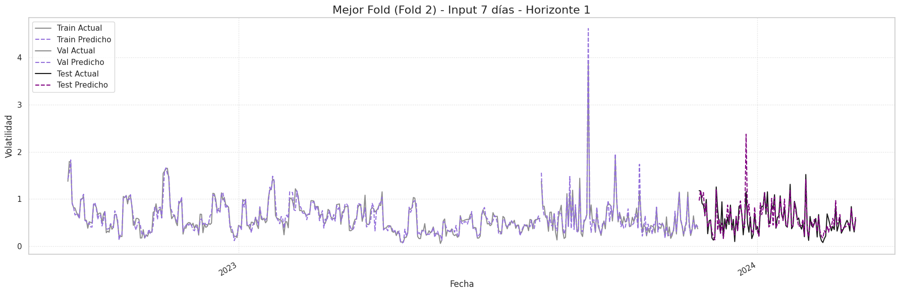
✓ Figura guardada: serie_temporal_lag7_Fold_Mediano_Fold_4.png
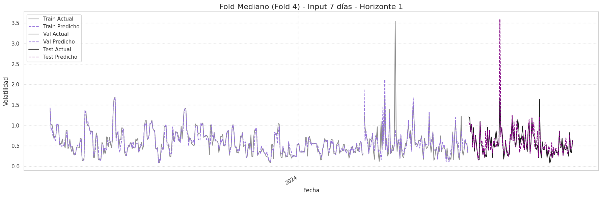
✓ Figura guardada: serie_temporal_lag7_Peor_Fold_Fold_5.png
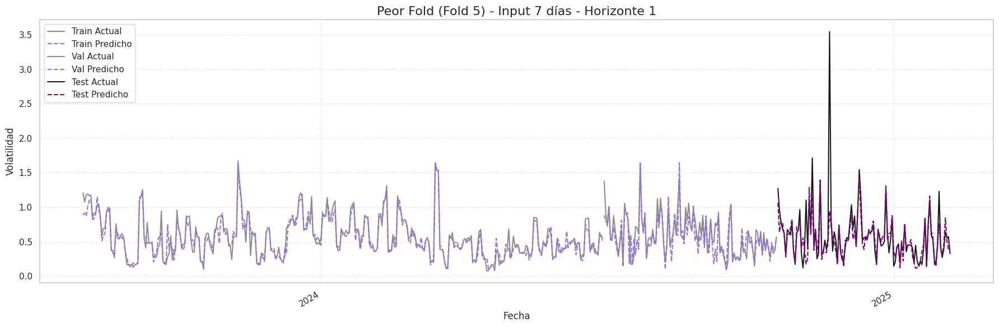
📈 Visualizando para ventana de 14 días...
✓ Figura guardada: serie_temporal_lag14_Mejor_Fold_Fold_2.png
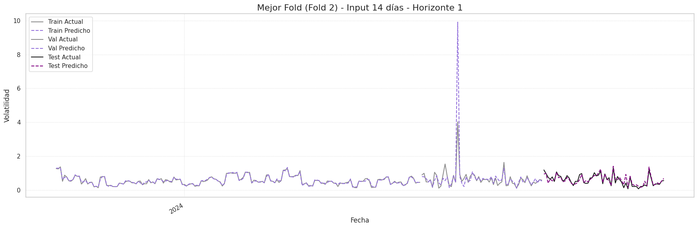
✓ Figura guardada: serie_temporal_lag14_Fold_Mediano_Fold_3.png
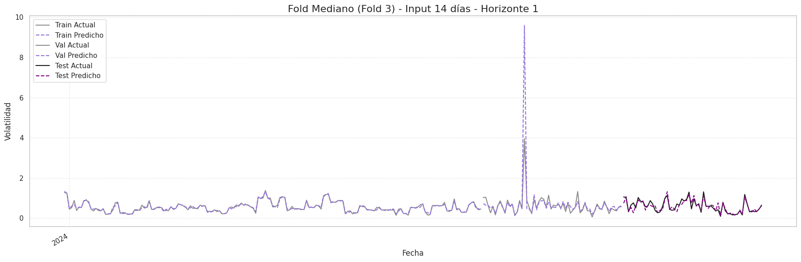
✓ Figura guardada: serie_temporal_lag14_Peor_Fold_Fold_5.png
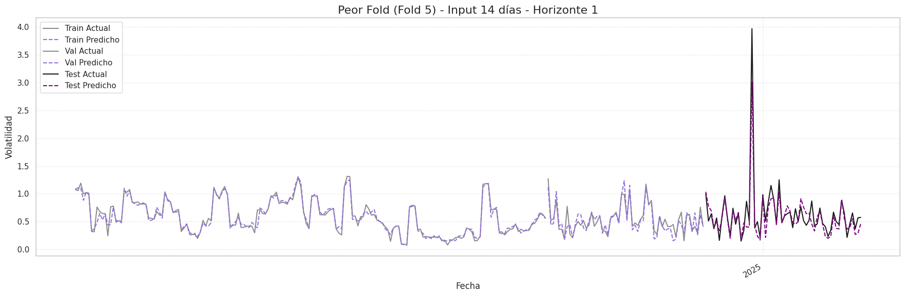
📈 Visualizando para ventana de 21 días...
✓ Figura guardada: serie_temporal_lag21_Mejor_Fold_Fold_5.png
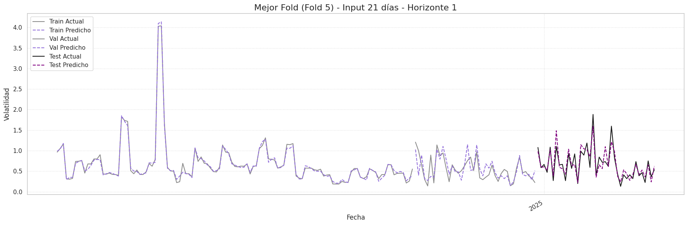
✓ Figura guardada: serie_temporal_lag21_Fold_Mediano_Fold_4.png
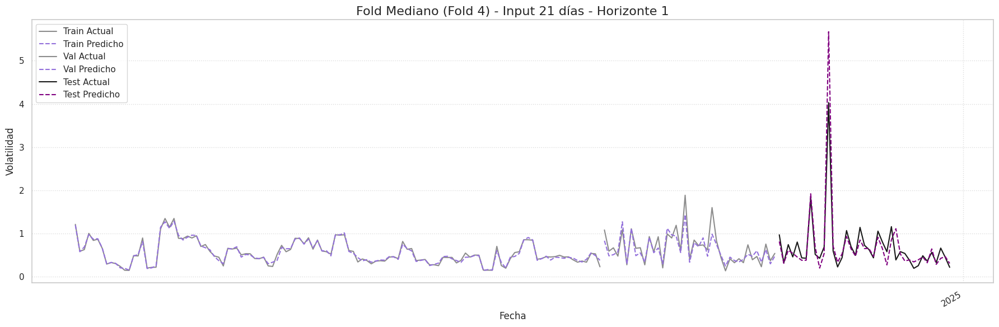
✓ Figura guardada: serie_temporal_lag21_Peor_Fold_Fold_3.png
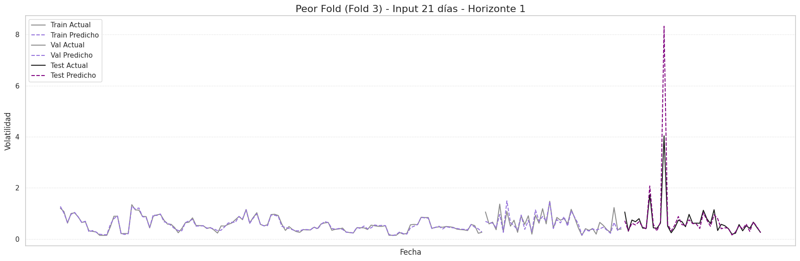
📈 Visualizando para ventana de 28 días...
✓ Figura guardada: serie_temporal_lag28_Mejor_Fold_Fold_5.png
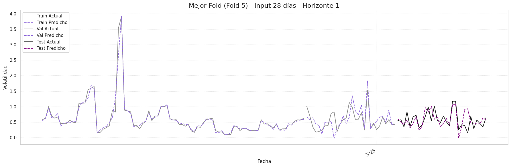
✓ Figura guardada: serie_temporal_lag28_Fold_Mediano_Fold_2.png
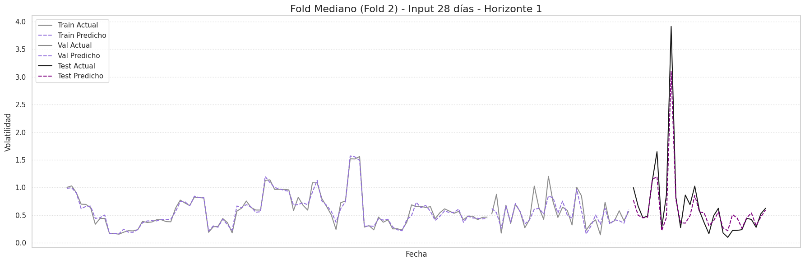
✓ Figura guardada: serie_temporal_lag28_Peor_Fold_Fold_3.png
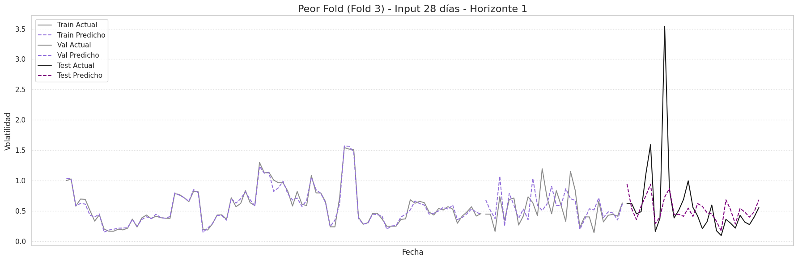
--- Generando Gráficas de Resumen de Métrica RMSE ---
✓ Figura 'RMSE por Fold' guardada.
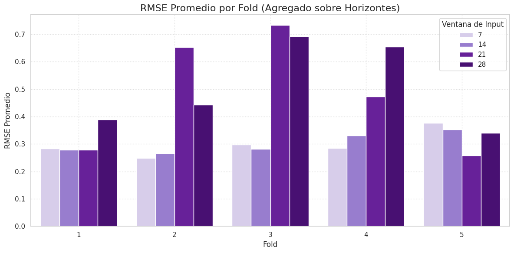
✓ Figura 'RMSE por Horizonte' guardada.
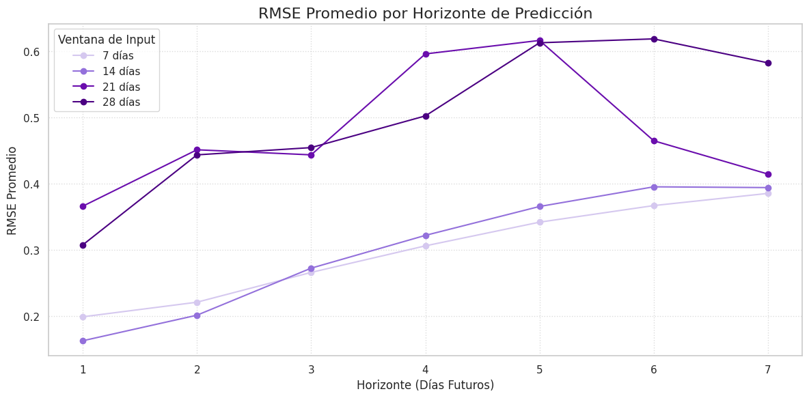
Proceso de visualización completado.
Conclusión General y Síntesis de Gráficos de Rendimiento#
El análisis conjunto de los gráficos de RMSE y de las series temporales de predicción ofrece una visión integral del rendimiento de los modelos.
La evidencia visual respalda las métricas cuantitativas y explica las causas del éxito o fracaso de cada estrategia de lag.
1. Éxito de los Lags Cortos (7 y 14 días)#
Evidencia Cuantitativa:
Los gráficos de RMSE muestran un error promedio más bajo y mayor estabilidad entre folds.
Evidencia Cualitativa:
Las predicciones siguen de cerca la dinámica real de la volatilidad, capturando tanto la tendencia general como la magnitud y el momento de los picos.
Incluso en sus peores folds mantienen una capacidad predictiva razonable.
El modelo de 7 días destaca por su ajuste superior y mayor consistencia.
2. Fracaso de los Lags Largos (21 y 28 días)#
Evidencia Cuantitativa:
Los gráficos de RMSE reflejan un error más alto y errático.
Evidencia Cualitativa:
Predicciones excesivamente suavizadas y, en el peor de los casos, casi planas.
Incapacidad para capturar picos de volatilidad, los eventos más relevantes del pronóstico.
Alta inestabilidad entre folds, con escenarios donde el modelo falla en aprender los patrones de la serie.
3. Síntesis: La Relevancia Temporal#
Los gráficos cuantitativos y visuales convergen en un mismo principio: el balance entre señal y ruido.
El modelo de 7 días sobresale porque aprovecha datos recientes, donde la señal es fuerte y relevante.
Al ampliar la ventana a 21 y 28 días, se introduce demasiado ruido histórico, lo que lleva al modelo a promediar y perder capacidad de reacción a los cambios de alta frecuencia.
Diagnóstico de residuos#
from statsmodels.stats.diagnostic import acorr_ljungbox
ljungbox_results = []
for lag, residuals in residuals_dict.items():
for h in range(residuals.shape[1]):
res_h = residuals[:, h]
try:
if len(res_h) < 30:
raise ValueError("Serie demasiado corta para Ljung-Box")
lb_test = acorr_ljungbox(res_h, lags=[10], return_df=True)
p_value = lb_test['lb_pvalue'].iloc[0]
ljungbox_results.append({
"Lag": lag,
"Horizonte": h + 1,
"Ljung-Box p-value": round(p_value, 4)
})
except Exception as e:
ljungbox_results.append({
"Lag": lag,
"Horizonte": h + 1,
"Ljung-Box p-value": f"Error: {str(e)}"
})
# Convertir a tabla pivote para visualización
ljungbox_df = pd.DataFrame(ljungbox_results)
display(ljungbox_df.pivot(index="Lag", columns="Horizonte", values="Ljung-Box p-value"))
| Horizonte | 1 | 2 | 3 | 4 | 5 | 6 | 7 |
|---|---|---|---|---|---|---|---|
| Lag | |||||||
| 7 | 0.0738 | 0.3954 | 0.1661 | 0.0695 | 0.1527 | 0.2935 | 0.6222 |
| 14 | 0.0017 | 0.6206 | 0.8032 | 0.8638 | 0.9267 | 0.6197 | 0.6958 |
| 21 | 0.8826 | 0.6804 | 0.0638 | 0.1366 | 0.0850 | 0.1023 | 0.0233 |
| 28 | 0.8081 | 0.6616 | 0.7918 | 0.7214 | 0.2360 | 0.0286 | 0.1434 |
El propósito de la prueba de Ljung-Box en este contexto es verificar si los errores (residuos) de los modelos son aleatorios o si aún contienen patrones de autocorrelación no capturados. Un modelo robusto debería dejar residuos que se asemejen al ruido blanco, es decir, sin autocorrelación significativa.
Análisis por Modelo#
Modelo de 7 Días — Rendimiento Superior#
Resultado: p-valores > 0.05 en todos los horizontes (H1–H7).
Conclusión: Los residuos son indistinguibles del ruido blanco.
→ Ha capturado eficazmente la estructura temporal de la volatilidad.
Modelo de 14 Días — Problemático en el Corto Plazo#
Resultado: p-valor = 0.0017 en H1 (muy bajo y significativo).
Conclusión: Débil para el horizonte más crítico (1 día).
→ Aunque mejora en H2–H7, omite información predecible en el corto plazo.
Modelos de 21 y 28 Días — Débiles en el Largo Plazo#
Resultado:
Modelo 21 días falla en H7 (p-valor = 0.0233).
Modelo 28 días falla en H6 (p-valor = 0.0286).
Conclusión: Funcionan razonablemente en horizontes cortos, pero pierden eficacia en horizontes largos.
→ Dejan patrones sin explicar en los residuos.
Síntesis General#
El modelo de 7 días es el más preciso, estable y estadísticamente robusto.
Supera a los demás porque sus residuos pasan la prueba de Ljung-Box en todos los horizontes.
Los modelos de 14, 21 y 28 días presentan fallos estructurales:
El de 14 días falla en el corto plazo.
Los de 21 y 28 días fallan en los horizontes largos.
El modelo de 7 días no solo ofrece mejor precisión y estabilidad (según RMSE y gráficos), sino que también garantiza la robustez estadística de sus predicciones. Es la opción óptima para pronósticos de volatilidad a corto plazo.